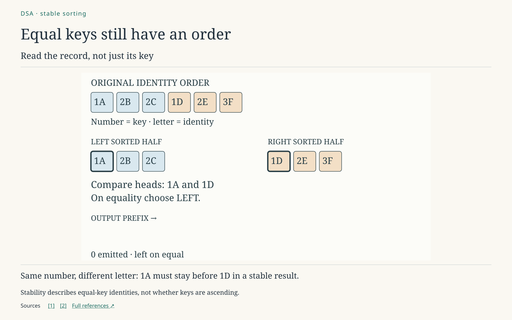
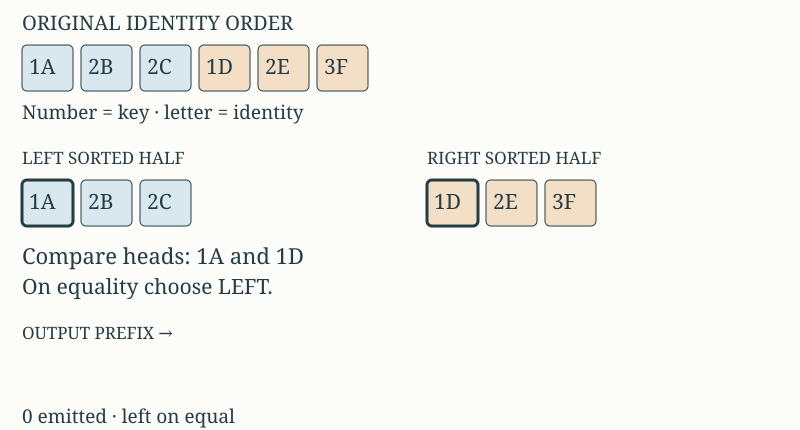

Trace one merge: the tie rule decides whether identity survives.


Editable SVG · 1440 × 900 PNG
The original order is 1A, 2B, 2C | 1D, 2E, 3F. Each half is already sorted. The heavy outlines mark the next available heads. Move Records emitted to trace the merge one decision at a time.